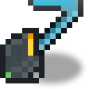

Электромотыга
alaindustrial:electric_hoe
Сводка
Электромотыга — четвёртый и последний ручной электроинструмент линейки: после бура (камень), пилы (дерево) и лопаты (земля) она закрывает грядки. Контракт тот же: работает на EU/FE вместо прочности, не ломается, при разряде продолжает работать на скорости руки с полным дропом.
Мотыга делает две вещи, и обе стоят 50 EU/FE за применение:
Вспашка. ПКМ по земле, траве или тропинке делает грядку; уголь-дёрн превращается в землю, корневая земля — в землю с висячим корнем. Ломание блоков. Мотыга ломает #minecraft:mineable/hoe на скорости 9.0 против 8.0 у алмазной — это сено, листва, губка, мох, незер-бородавочный блок, сушёная ламинария.
Полный буфер — 10 000 EU/FE, около 200 применений на одну зарядку.
Разряжённая мотыга ведёт себя по-разному в двух своих ролях, и это намеренно:
ломать она продолжает — на скорости руки (1.0), уровень добычи и весь дроп сохраняются; вспахать не может — вместо грядки в строке над хотбаром появится красная надпись «Недостаточно заряда для вспашки».
Так же устроен факел у электробура: добыча при разряде деградирует, а ПКМ-действие требует заряда. Вспашка — это вся суть мотыги, и будь она бесплатной, инструмент не тратил бы ни одного EU/FE за всю игру.
Как и остальные EU/FE-предметы мода, мотыга не имеет прочности и не ломается: полоса под иконкой показывает не износ, а заряд EU/FE (жёлтая, цвет LV).
Энергия
Собственный EU/FE-буфер, вне энергосети. Заряжается в слоте Энергохранилища и от надетого ранца; тратит заряд и на вспашку, и на ломание блоков.
| Поле | Значение |
|---|---|
| Роль | ручной инструмент с EU/FE-буфером: потребитель у зарядника |
| Буфер | 10 000 EU/FE |
| Зарядка | слот Энергохранилища / надетый ранец, ≤ 32 EU/FE/тик (ограничен потолком LV) → полный заряд ~16 с |
| Расход | 50 EU/FE за успешно сломанный блок и 50 EU/FE за успешную вспашку |
| Пассивный разряд | нет |
| Компонент | (Long, persistent + networkSynchronized) — общий компонент всех электро-предметов мода |
Расход снимается только на сервере и только за блоки с ненулевой твёрдостью. В творческом режиме заряд не тратится.
Инвентарь
Не применимо — у мотыги нет внутреннего хранилища предметов (стак 1).
Свойства блока
Не применимо (предмет).
Рецепты
Крафт — тот же каркас, что у остальных трёх, но в центре алмазная мотыга: ряд железных слитков сверху, две батареи по бокам, снизу две медные катушки и электронная схема. Заряд батарей переходит в готовую мотыгу. Рецепт открывается в книге, когда у игрока появляются медная катушка, электронная схема или алмазная мотыга (advancement recipes/misc/electric_hoe).
Ремонт — не применим: прочности нет, чинить нечего; «ремонт» — это зарядка EU/FE.
Поведение
Вспашка и прочие превращения по ПКМ — стоят 50 EU/FE. Земля, трава и тропинка → грядка; уголь-дёрн → земля; корневая земля → земля + висячий корень. Заряд снимается только когда превращение действительно произошло: клик по каменной стене или по уже вспаханной грядке буфер не трогает. При нехватке заряда мотыга не вспахивает и пишет об этом над хотбаром — как бур с факелом, но только если под курсором вспахиваемый блок: клик разряженной мотыгой по камню, сундуку или чему угодно другому проходит насквозь — без сообщения и без перехвата, так что предмет во второй руке срабатывает штатно. Технически это делегирование в HoeItem.useOn ванильной алмазной мотыги — метод публичный, не читает состояние своего предмета (в байт-коде нет ни одного aload_0), а его единственный — no-op для предмета без MAX_DAMAGE. Плюс: карта TILLABLES изменяемая, поэтому превращения из других модов работают сами собой. Разбор байт-кода — в задаче. Ломание блоков: пока заряда ≥ 50 EU/FE, мотыга ломает #minecraft:mineable/hoe на скорости 9.0 (алмазная — 8.0). За каждый такой блок снимается 50 EU/FE. Разряженная мотыга: при заряде ниже 50 EU/FE ломает на скорости руки (1.0), но уровень добычи и дроп сохраняются, и EU/FE не тратится. Чара Efficiency при этом не действует (ванильный порог speed > 1.0). Вспахать разряженной мотыгой нельзя — см. выше. Зарядка: слот зарядки Энергохранилища и надетый энергоранец принимают мотыгу автоматически, до 32 EU/FE/тик. Атака: как ванильная мотыга — оружием не является (урон 1, скорость атаки 4). Удары не тратят EU/FE и не изнашивают мотыгу. Чары: мотыга входит в #minecraft:hoes, поэтому стол зачарования и наковальня работают с ней как с мотыгой. Unbreaking/Mending на неломаемой мотыге бесполезны, но безвредны. Сбор урожая — не поддерживается. Это работа Косы, она для этого и сделана; дублировать её в мотыге не стали. Индикация: полоска под иконкой показывает заряд (жёлтая, LV-цвет). В тултипе — «Заряд: X / 10 000 EU/FE», при нуле — красное «Разряжена». Текстура меняется на «погасший» вариант при нулевом заряде. Дроп/смерть/релогин: заряд хранится в предмете и сохраняется. В креативе: заряд не тратится.
Алмазное напыление (апгрейд)
Электромотыга с алмазным напылением — вторая ступень мотыги и третий апгрейд линейки после алмазного бура и алмазной пилы. Отличий от базовой мотыги ровно два, всё остальное наследуется без изменений.
1. Ломает быстрее. Скорость 10.5 против 9.0 у базовой — тот же шаг +1.5, что взяли бур (8.5 → 10.0) и пила (9.0 → 10.5). Уровень добычи при этом не меняется: апгрейд ускоряет работу, а не открывает новые блоки.
2. Вспаханная грядка сразу влажная. Обычная вспашка — хоть ванильной мотыгой, хоть базовой электрической — создаёт сухую грядку: у свежего блока грядки влажность равна нулю. Дальше ваниль
если в коробке ±4 блока по горизонтали есть вода или идёт дождь — влажность подтягивается до максимума сама; если воды нет — влажность падает на единицу за случайный тик, а когда она дошла до нуля и на грядке ничего не растёт, блок превращается обратно в землю.
Отсюда и ценность апгрейда: вспахать поле вдали от воды и не засадить его в ту же минуту в ванили почти бессмысленно — грядки пересохнут и осыпутся в землю. Мотыга с напылением отдаёт свежую грядку сразу с полной влажностью, то есть даёт и ускоренный рост (ваниль растит на влажной земле быстрее), и запас в семь случайных тиков до того, как грядка вообще сможет откатиться.
Это фора, а не поливалка. Влажность после этого убывает по обычному ванильному расписанию; апгрейд не поддерживает её и не заменяет воду рядом с полем. Уже существующую грядку он тоже не поливает — эффект срабатывает только на блоке, который сам же и превратил в грядку, и только когда за вспашку реально списан заряд. Разряженной мотыгой полить грядку нельзя.
Отдельно: вспашка уголь-дёрна и корневой земли даёт обычную землю, а не грядку (так устроена ваниль), поэтому на них эффект не распространяется — поливать там нечего.
Почему не шёлковое касание, как у бура и пилы. У тех апгрейдов вторая механика — переключаемый шёлк, и для мотыги он был бы пустышкой: все блоки её домена (#minecraft:mineable/hoe — сено, листва, губка, мох, незер-бородавочный блок, сушёная ламинария) и без всяких чар падают сами собой. Удваивать там нечего, подавлять нечего. Поэтому апгрейд усиливает то, что есть только у мотыги, — вспашку.
Что унаследовано без изменений: EU/FE-буфер 10 000, расход 50 EU/FE за блок и 50 EU/FE за вспашку, приём 32 EU/FE/тик, зарядка в тех же местах, отсутствие прочности, работа на скорости руки при пустом баке, поведение в креативе, атака как у ванильной мотыги (оружием не является). Своих конфиг-ключей у апгрейда нет.
Крафт: — базовая мотыга в центре, сверху ряд из трёх алмазных пылинок (собственно «напыление»), по бокам два слитка купроникеля, снизу лазуритовая пыль. Материалы намеренно отличаются и от буровых (инварит, серебряная шестерня), и от пильных (бронза, золотая шестерня), чтобы три ветки апгрейда не тянули один и тот же дефицит. Шестерни в рецепте нет осознанно: у мотыги нет вращающихся частей, и привод ей нечему передавать — вместо шестерни снизу стоит лазуритовая пыль как «водяная» часть рецепта, отвечающая за полив.
Заряд при апгрейде сохраняется. Рецепт использует тип , поэтому EU/FE из вложенной базовой мотыги переезжает в результат, а не сгорает. Так же устроены рецепты бура и пилы.
Раскладывать рецепт придётся руками. Кнопка автозаполнения из книги рецептов не подхватывает заряженную мотыгу: ванильный поиск ингредиента в инвентаре сравнивает компоненты предмета, а у заряженной мотыги есть pouch_energy, которого нет у витринного эталона. Ограничение ванильное, общее для всех трёх апгрейдов — подробности в задаче.
Прогрессия
Четвёртый и последний электроинструмент линейки: бур — камень, пила — дерево, лопата — земля, мотыга — грядки. Доступна после Энергохранилища и батареи: без LV-инфраструктуры мотыгу не скрафтить и не зарядить. LV-уровень. Остальные электропредметы (сабля/нано-лук/ваджра) — будущая работа.
Связанное
Электробур — каменная часть линейки, тот же расход за блок. Электропила — деревянная часть линейки. Электролопата — земляная часть; тот же приём с делегированием ПКМ, но у неё действие бесплатное, а у мотыги платное. Коса — инструмент для сбора урожая, мотыга её не заменяет. Энергохранилище — зарядка мотыги (слот charge).
Крафт
Крафт на верстаке
▶
Электромотыга
Используется в
Крафт на верстаке
▶

Электромотыга с алмазным напылением